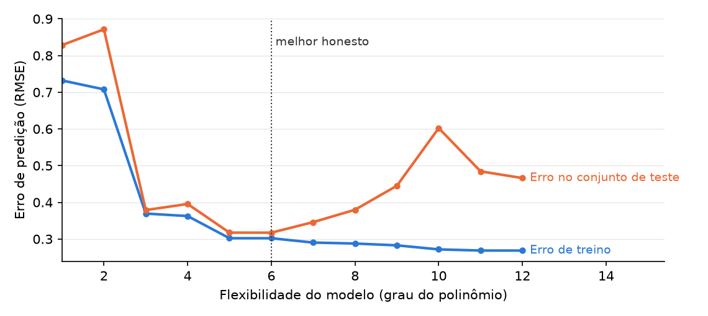

14 Predição e Generalização
Este capítulo faz parte de um livro em desenvolvimento ativo e ainda não passou pela revisão do autor. O conteúdo pode mudar conforme a revisão avança.

A decisão de pesquisa. Decida se a sua pergunta é mesmo uma previsão sobre casos que ninguém viu ainda e, se for, assine um contrato de quatro partes antes de ajustar qualquer coisa: alvo, linha de base, divisão, métrica, mais uma checagem de vazamento. É esse contrato que permite defender uma pontuação modesta e honesta e dizer em voz alta onde a sua previsão para de funcionar.
14.1 Por que essa decisão importa
A decisão em jogo: se você está prevendo casos não vistos e, se estiver, qual pontuação você aceitaria como honesta.
Imagine uma gestora de saúde pública municipal que precisa decidir, semana a semana, se emite um alerta contra o banho em um lago. Florações de cianobactérias podem transformar uma praia segura em risco à saúde em poucos dias. Chega um fornecedor com um modelo que sinaliza florações nocivas “com 94% de acurácia”.
“Noventa e quatro por cento comparado a O QUÊ? Na maioria das semanas este lago está bem, então, se eu simplesmente disser ‘sem floração’ toda santa semana, já acerto umas oitenta e cinco por cento das vezes. Se o seu modelo não superar isso com folga, e provar que superou em semanas que ele nunca estudou, eu não fecho uma praia pública na palavra dele.” — uma gestora de saúde pública que já se queimou com um número de aparência impressionante
Essa gestora faz as duas perguntas que este capítulo treina você a responder antes de confiar em qualquer previsão. Ela é melhor que a regra honesta mais burra? E foi conquistada em casos que o modelo nunca viu? Erre isso e você grita “lobo!” ou deixa passar um risco real.
14.2 O conceito
Uma predição é o melhor palpite sobre um caso cujo desfecho você ainda não consegue ver. Exemplo: prever se um lago vai ter floração na semana que vem, antes de a semana que vem existir. Predição é descritiva, não causal. Ela prevê o que vai acontecer, nunca por quê.
O que faz da predição uma pergunta própria é o seu alcance, os casos que uma alegação pretende cobrir. O alcance da predição são os casos não vistos, unidades que não estão nos seus dados e cujo desfecho ainda é desconhecido, como as amostras do mês que vem. A prima dela é a generalização, o alcance que vai da sua amostra para uma população mais ampla, como dos doze lagos que você mediu para todos os lagos da bacia. As duas vão além dos dados em mãos, e as duas só são honestas quando você consegue nomear o cruzamento que as autoriza.
Uma previsão ganha confiança sob um contrato de quatro partes, em ordem fixa. O alvo é a única coluna que você prevê, por exemplo bloom_next_week. A linha de base é a regra honesta mais burra que você precisa superar, em geral “sempre chutar a resposta mais comum”; se 85% das semanas não têm floração, essa regra marca 85% de graça, então 85% é a régua. A divisão separa as linhas em um conjunto de treino, com que o modelo aprende, e um conjunto separado para teste (held-out), linhas guardadas durante o treino e usadas só como prova final, digamos um quarto das semanas escolhido ao acaso. A métrica é como você conta pontos, casada com o alvo; a acurácia engana quando florações são raras, então a revocação na classe “floração”, a fatia das florações reais que o modelo pega, costuma importar mais.
Uma armadilha está acima de todas as outras. Vazamento de dados é uma variável que carrega informação que você não teria no momento da previsão, porque o valor dela só se define no momento do desfecho ou depois dele. Exemplo: a concentração de toxinas medida durante a floração. Uma variável vazada infla a sua pontuação nos dados de hoje e desaba nos de amanhã, porque ela não vai existir quando você realmente precisar da previsão.
14.3 Um exemplo trabalhado
Suponha que você queira avisar quem nada no lago com uma semana de antecedência. O seu alvo é bloom_next_week, um se o lago ultrapassa o limiar do alerta e zero caso contrário. Ao longo de três verões de amostras semanais, 85% das semanas estão limpas, então a sua linha de base, “sempre dizer que não há floração”, marca 0,85 sem modelo nenhum.
Você mantém variáveis genuinamente conhecidas com uma semana de antecedência: temperatura da água, chuva recente, carga de fósforo rio acima. Você ajusta um modelo logístico (um classificador padrão de sim ou não), divide e separa um quarto das semanas para teste, e pontua os dois só nessas semanas separadas. O modelo fica em torno de 0,88. Essa vantagem de quatro pontos parece pequena, e a pequenez dela é o resultado honesto: uma vitória verdadeira e modesta vale mais que uma vitória falsa e dramática.
Aí uma colaboradora bem-intencionada acrescenta chlorophyll_a, a leitura do pigmento. A acurácia no conjunto separado salta para 0,97. Empolgante, até você perguntar quando a clorofila é medida: durante a própria floração que você está prevendo. É o desfecho usando outro crachá. Tire a variável e a pontuação volta para 0,88. Quem decide é o teste de temporalidade, não a acurácia. E, como você treinou em um lago raso, você nomeia a fronteira em voz alta: em um reservatório fundo e frio o padrão pode não valer, então a previsão ainda não generaliza para lá.
14.4 Uma simulação com semente
O capítulo afirma que um modelo pode ficar melhor nos dados que ele tem enquanto fica pior nos casos que nunca viu. Veja isso acontecer. A semente torna a execução reprodutível: o mesmo código sempre sorteia o mesmo mundo. O código constrói um mundo (uma curva seno mais ruído), sorteia dele um conjunto de treino e um conjunto de teste, ajusta ao treino polinômios de flexibilidade crescente, e avalia cada ajuste nos dois conjuntos.
import numpy as np
import matplotlib.pyplot as plt
SEED = 464
rng = np.random.default_rng(SEED)
def mundo(n):
x = rng.uniform(-3, 3, n)
return x, np.sin(1.5 * x) + rng.normal(0, .35, n)
x_treino, y_treino = mundo(40)
x_teste, y_teste = mundo(40)
graus = np.arange(1, 13)
erro_treino, erro_teste = [], []
for g in graus:
coefs = np.polyfit(x_treino, y_treino, g)
erro_treino.append(np.sqrt(np.mean(
(np.polyval(coefs, x_treino) - y_treino) ** 2)))
erro_teste.append(np.sqrt(np.mean(
(np.polyval(coefs, x_teste) - y_teste) ** 2)))
melhor = graus[int(np.argmin(erro_teste))]
fig, ax = plt.subplots(figsize=(7.6, 3.4))
ax.plot(graus, erro_treino, color="#2a78d6", lw=2, marker="o", ms=4)
ax.plot(graus, erro_teste, color="#eb6834", lw=2, marker="o", ms=4)
ax.axvline(melhor, color="#333333", ls=":", lw=1)
ax.text(graus[-1], erro_treino[-1], " Erro de treino", color="#2a78d6",
fontsize=9, va="center")
ax.text(graus[-1], erro_teste[-1], " Erro no conjunto de teste",
color="#eb6834", fontsize=9, va="center")
ax.text(melhor + .1, max(erro_teste) * .95, "melhor honesto",
color="#333333", fontsize=9)
ax.set_xlabel("Flexibilidade do modelo (grau do polinômio)")
ax.set_ylabel("Erro de predição (RMSE)")
ax.set_xlim(graus[0], graus[-1] + 3.4)
plt.show()
O erro de treino azul só cai: cada grau extra de flexibilidade deixa o modelo se curvar mais para perto dos pontos que ele já viu. O erro de teste laranja cai enquanto o modelo aprende sinal, atinge o mínimo perto do grau seis, e sobe quando o modelo começa a memorizar ruído. A linha pontilhada é o melhor honesto: a flexibilidade que uma checagem em dados separados escolheria. Nada na linha azul sozinha diria para você parar ali; só dados que o ajuste nunca tocou podem dizer isso, e esse é o argumento inteiro da checagem em dados separados que esta trilha exige. No notebook companheiro, aumente o ruído (o .35) e veja o melhor honesto se mover para a esquerda: quanto mais ruidoso o mundo, menos flexibilidade a verdade sustenta.
14.5 O laboratório em Colab
Este capítulo tem o seu próprio notebook companheiro — abra-o no Colab pelo selo acima. O notebook reúne os prompts e o código do capítulo e termina com o espaço de trabalho Agora é a sua vez, para você completar a etapa do capítulo no seu projeto sem sair do Colab. O laboratório completo de sala de aula por trás deste capítulo é o notebook do curso nb08 — Prediction: generalizing to unseen cases (abrir no Colab), parte do curso companheiro apresentado no apêndice Para instrutores. No laboratório você assina o contrato de quatro partes em um conjunto de dados real, pontua primeiro uma linha de base honesta e depois constrói um vazamento de propósito, para sentir uma pontuação falsa subir e aprender a caçá-la por correlação e por temporalidade antes de retreinar limpo.
14.6 Prompts de IA recomendados
Comprometa-se com a sua própria resposta primeiro, depois delegue. Cole saída de verdade, nunca um número que você lembra. Espere rodar cada prompt mais de uma vez: leia a resposta, nomeie a parte em que você não acredita, devolva essa objeção para dentro do prompt e rode de novo. Ferramentas que rodam esse loop sozinhas, ajustando e reajustando um modelo ao longo de várias voltas, tornam a pergunta sobre vazamento mais urgente, não menos. Ninguém no loop além de você sabe quando os seus dados foram registrados.
Act as a Python tutor. Here is a cell that holds out 25% of my weekly
lake samples, scores a majority-class baseline on them, then scores a
logistic model on the SAME held-out weeks: [paste cell]. Explain, line
by line, what the split does and why it must happen before any fitting.
Then give me one independent way to confirm the held-out weeks were
never in training.Depois de rodar, verifique: leia a linha de base, o modelo e a margem na sua própria saída impressa e confirme que os números da ferramenta batem, e não que ela os chutou. Enfrenta a fabricação confiante, uma explicação fluente que cita uma margem que o seu código nunca produziu.
Here is the outcome I want to predict and the moment I need the forecast:
a bloom next week, decided by next week's samples. Here is my candidate
feature list with when each value is recorded: [list]. For each feature,
say whether its value is settled before, at, or after the outcome, and
flag any that could not exist at prediction time.Depois de rodar, verifique: refaça você mesmo o raciocínio de temporalidade da variável que ela liberar com mais confiança. Se alguma variável só se define no momento da floração ou depois dela, rejeite-a, diga a ferramenta o que disser. Enfrenta a ilusão de completude, uma lista bem arrumada que omite justamente a variável tardia que condena a previsão.
Act as a hostile reviewer. Attack this headline: "Our model forecasts
blooms with 88% held-out accuracy." Name every reason a skeptic would
distrust it, including the baseline it beat, the metric, and any hidden
leak.Depois de rodar, verifique: confronte cada objeção com a sua saída impressa e guarde as que os seus números sustentam. Enfrenta a concordância bajuladora, em que uma assistente predisposta a ajudar elogia uma manchete que você mesmo escreveu.
Quatro decisões continuam sendo suas. O alvo: o que você prevê e por que isso importa. A linha de base: a regra honesta que o modelo precisa superar. A temporalidade de cada variável: se o valor existiria de verdade no momento da previsão, algo que só você, que conhece a linha do tempo dos seus dados, consegue resolver. E o veredito sobre se o seu projeto deveria prever alguma coisa. Uma ferramenta que nunca viu a sua linha do tempo não pode tomar essas decisões por você.
14.7 Um caso de falha da IA
Você cola a sua lista de variáveis e pergunta a uma parceria de IA quais são seguras de usar. Ela responde com confiança: “chlorophyll_a é o seu preditor mais forte, mantenha.” O raciocínio soa impecável, porque a clorofila se correlaciona quase perfeitamente com as florações. Essa correlação quase perfeita é exatamente o sinal. Esta é a falha do método plausível, porém errado: a ferramenta ordenou a variável pelo quanto ela se ajusta ao passado, não pelo quanto ela poderia existir a tempo de uma previsão. Você pega isso com uma pergunta que a estatística sozinha não responde. Quando a clorofila é medida? Durante a floração, então nenhuma previsão feita uma semana antes poderia tê-la. Tire a variável, veja a pontuação voltar para 0,88 e fique com o modelo honesto.
14.8 Agora é a sua vez
O seu desenho está declarado e diagnosticado. Este passo decide se o seu projeto está mesmo prevendo casos que ninguém viu ainda e, se estiver, coloca essa previsão sob contrato antes de você ajustar um único modelo.
- Faça a versão direta da sua pergunta: o seu projeto precisa adivinhar o desfecho de um caso cujo desfecho ainda não existe? Escreva sim ou não, e a frase única que justifica a sua resposta.
- Se for sim, assine o contrato de quatro partes, em ordem. Nomeie a coluna-alvo, a linha de base honesta mais burra que ele tem que superar, a divisão que mantém uma fatia de casos não vista e a métrica casada com o quanto o seu desfecho é raro.
- Liste as suas variáveis e escreva ao lado de cada uma o momento em que o valor dela se define. Circule tudo que se define no momento do desfecho ou depois dele. Esse conjunto circulado é a sua lista de vazamento, e ele pertence ao seu texto final, tendo você descartado ou não as variáveis que estão nela.
- Escreva a fronteira em uma frase: os casos que a sua previsão cobre e os que quem lê não deve supor que ela cobre. Seja específico sobre o que os torna diferentes.
- Se predição não for a sua pergunta, escreva a linha que diz isso com todas as letras e depois rode o passo 3 assim mesmo. Uma variável que só se define depois do desfecho também afunda, em silêncio, trabalhos descritivos e causais.
- Registre o passo no seu AI Research Ledger (registro de pesquisa com IA), e verifique pelo menos uma saída com um método nomeado do Guia de Verificação. Para um modelo ajustado, o método é a amostra separada para teste: nunca relate uma pontuação calculada em linhas com que o modelo treinou. Um revisor de IA pode rodar a checagem com você; a decisão de aceitar ou rejeitar continua sendo sua.